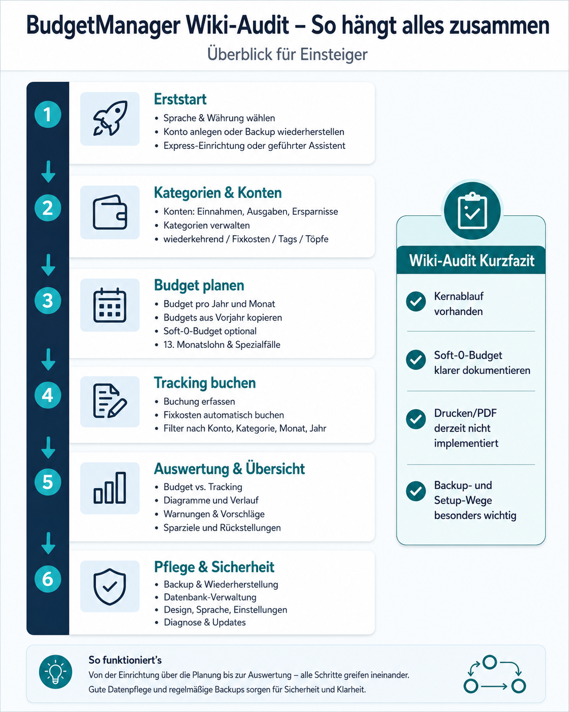
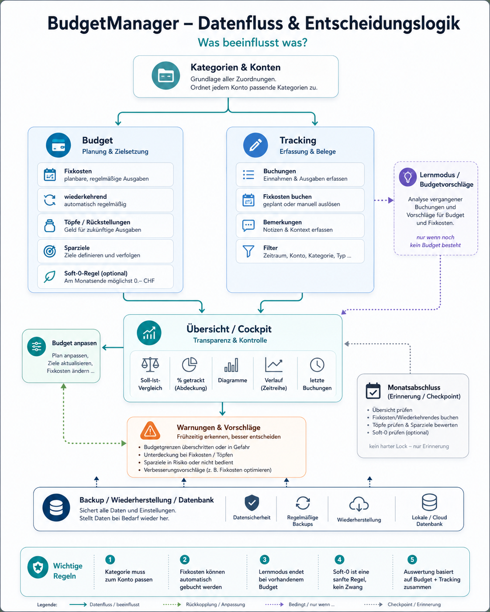
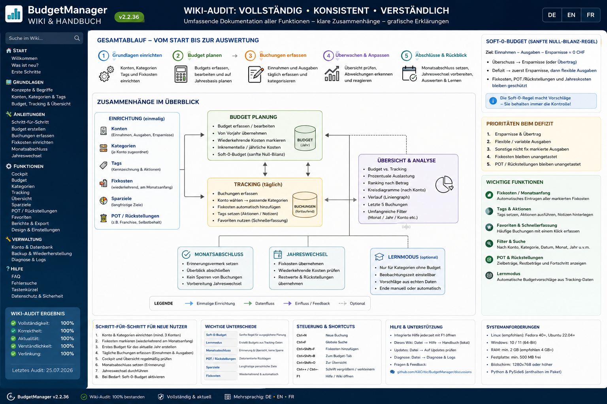

BudgetManager Wiki-Audit v2.2.43
Grafische Erklärung der Zusammenhänge – vollständig offline in der Anwendung enthalten.
Audit-Ergebnis: Die definierten Wiki-Prüfbereiche sind abgedeckt: Einstieg, Konten/Kategorien, Budget, Tracking, Lernmodus, Soft-0-Budget, POT/Rückstellungen, Übersicht, Monatsabschluss, Jahreswechsel, Backup, Exportgrenzen und Diagnose.
1. Gesamtprozess
Erststart → Konten & Kategorien → Budget oder Lernmodus → Tracking → Cockpit/Übersicht → Warnungen & Anpassung → Monatsabschluss → Jahreswechsel & Backup
Der Prozess ist zyklisch: Echte Buchungen verändern die Auswertung. Die Auswertung liefert Warnungen und Vorschläge. Änderungen am Budget wirken wiederum auf den nächsten Soll-Ist-Vergleich.
2. Wiki-Audit – Ablauf für Einsteiger

Orientierung vom Erststart über Planung und Tracking bis Backup und Sicherheit.
3. Datenfluss und Entscheidungslogik

Budget und Tracking sind getrennte Datenquellen; Cockpit und Übersicht verbinden beide. Lernmodus und Soft-0-Budget erzeugen Vorschläge, keine erzwungenen Buchungen.
4. Kompakte Wiki-Übersicht

Visuelle Zusammenfassung. Maßgeblich bleiben die Texte des integrierten Handbuchs, falls eine Grafik verkürzt.
Wichtige Regeln
- Budget = Plan; Tracking = echte Buchungen.
- Kategorie muss zum gewählten Konto/Typ passen.
- Lernmodus arbeitet nur, solange noch kein Budget existiert.
- Soft-0-Budget ist eine freiwillige Ausgleichsregel.
- Monatsabschluss setzt einen Erinnerungsvermerk, keine Sperre.
- POT/Rückstellung ist kein Sparziel.
- CSV/TXT sind Exporte; .bmr ist das Wiederherstellungsformat.
Linux-Hinweis: Der Hilfe-Einstieg in der linken Seitenleiste verwendet ein normales ASCII-Fragezeichen. Dadurch bleibt er unter Fedora/GNOME auch ohne Emoji-Schrift sichtbar.